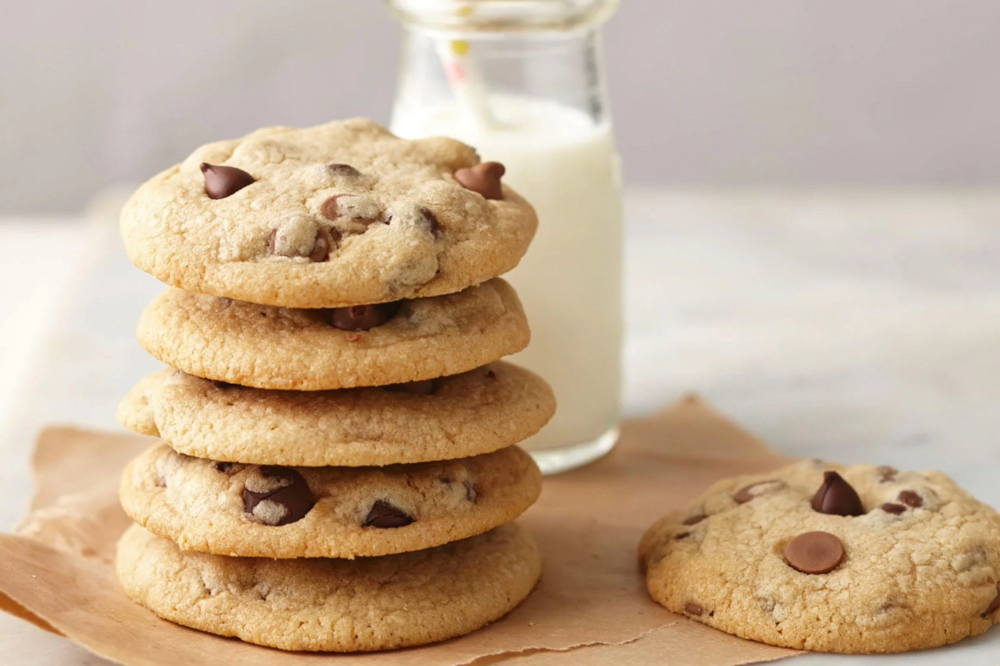

Prep time=10-15min Bake time=10-15min Cooling time=20-30min
supplies
non stick tray
spatula
parchment paper
electric mixer
Cooling tray
mixing bowl
Ingredients
8 tablespoons of salted butter
1/2 cup white sugar
1/4 cup packed light brown sugar
1 teaspoon vanilla
1 egg
1 1/2 cups all purpose flour (6.75 ounces)
1/2 teaspoon baking soda
1/4 teaspoon salt
3/4 cup chocolate chips
Instrution
1. Preheat the oven to 350 degrees. Microwave the butter for 40 seconds to barely melt it. It should be warm and it should be almost entirely in liquid form.
2. Using a stand mixer or electric beater, beat the butter and sugars until creamy. Add the vanilla and the egg; then beat on low speed until just incorporated, mix for 10-15 seconds.
3. Roll the dough into 12 large balls (or 9 for HUGELY awesome cookies) and place on a cookie sheet. Bake for 9-11 minutes until the cookies look puffy and dry and just barely golden. DO NOT OVERBAKE this is essential for keeping the cookies soft. Take them out even if they look like they are not done yet they all be pale and puffy.
4. Let them cool on the pan for 30 minutes. They will sink down and turn into these dense, buttery and soft.NOW ENJOY